איפיון מוצר, גרסה 1.1אפליקציית מובייל, עבריתלאישור
פרויקט אגורה
חפץ שמישהו כבר לא צריך, אצל מישהו שצריך אותו. האפליקציה בונה מחדש את לוח המסירה החינמי הוותיק בישראל סביב שלוש פעולות: למצוא, לפנות, למסור. כל השאר נשאר שקט.
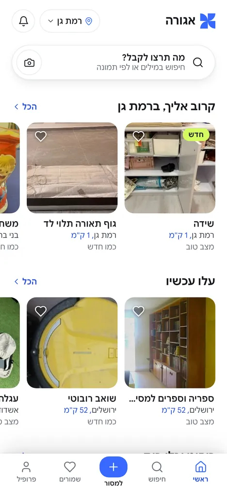
למצוא
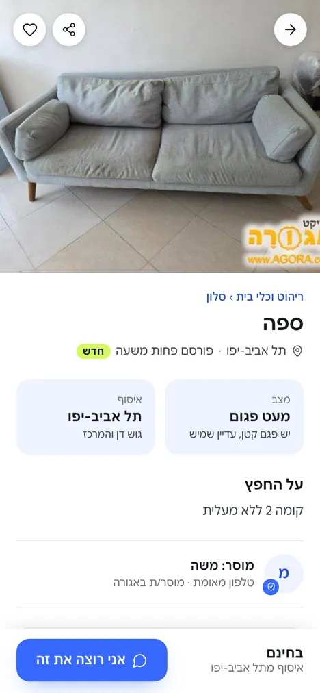
לפנות
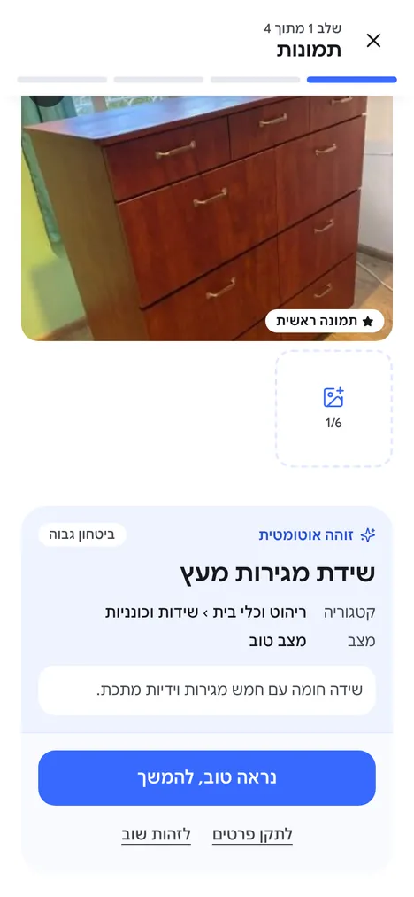
למסור
הבעיה והמטרות
אגורה פועלת משנות האלפיים ויש לה קהילה גדולה: 1,170,087 גולשים ו-1,162,919 חפצים שנמסרו, לפי האתר. האפליקציה עצמה לא התחדשה, והביקורות בחנות מתארות שלוש תקלות שחוזרות על עצמן.
"לא ניתן לנווט באפליקציה. מסכי הפרסומות חוסמים את סמלון החיפוש הקטנטן… אם אתה בכל זאת מגיע לפריט מעניין תקבל אפשרות להתקשר בתשלום נצלני עם קידומת 1-900."ביקורת משתמש ב-Google Play
חיפוש שלא מוצאים
החיפוש קטן ומוסתר מאחורי פרסומות. מטרה: חיפוש הוא הרכיב הבולט ביותר במסך הבית, ונגיש בכל גלילה.
קשר בתשלום
פנייה למוסר דרך מספר 1-900. מטרה: יצירת קשר בהודעה בתוך האפליקציה, בחינם, עם אימות טלפון חד-פעמי.
אין דרך חזרה
ניווט שבור ומסכים בלי יציאה. מטרה: חץ חזרה בכל מסך, לשוניות קבועות, וכפתור החזרה של המכשיר עובד תמיד.
מדדי הצלחה
הערכים הם יעדים מוצעים לשלושת החודשים הראשונים אחרי ההשקה. אין לנו כרגע נתוני בסיס מהאפליקציה הקיימת, ולכן השלב הראשון הוא למדוד אותם.
מדד
איך מודדים
יעד מוצע
זמן עד פנייה ראשונה
מפתיחת האפליקציה עד שליחת הודעה למוסר
פחות מ-60 שניות בחציון
הצלחת חיפוש
חיפושים שהסתיימו בכניסה לדף חפץ
60% ומעלה
השלמת פרסום
מי שהתחיל למסור והגיע ל"פרסום בלוח"
70% ומעלה
מודעות עם תמונה
שיעור המודעות שפורסמו עם תמונה אחת לפחות
85% ומעלה
חפץ שנמסר בפועל
מודעות שסומנו "נמסר" תוך 7 ימים
40% ומעלה
דירוג בחנות
ממוצע הביקורות החדשות אחרי ההשקה
4.3 ומעלה
משתמשים ותרחישים
לאגורה שלושה מצבים. אותו אדם עובר ביניהם, ולכן אין הפרדה בין "חשבון מוסר" ל"חשבון מקבל".
המחפש
צריך משהו מסוים, לרוב עכשיו: מיטת תינוק, מקרר, שולחן.
רוצה לראות תמונה ומצב לפני שהוא פונה
מסנן לפי עיר, כי האיסוף עליו
חוזר כמה פעמים ביום אם לא מצא
המוסר
מפנה דירה, מחליף ריהוט, או לא רוצה לזרוק.
רוצה לפרסם בדקה, מהטלפון, בלי טופס ארוך
לא רוצה שהטלפון שלו יהיה פומבי
רוצה לסגור את המסירה ולהוריד את המודעה
האורח
הגיע מחיפוש בגוגל, משיתוף או מסקרנות.
רוצה לראות מה יש לפני שנרשם
מחפש ושומר בלי חשבון
מתבקש להתחבר רק כשהוא פונה למוסר או מוסר בעצמו
עקרונות מוצר
כל עיקרון לקוח מתבנית שעובדת במוצרים מובילים, ומותאם לאגורה. כשיש התנגשות בין עקרונות, הסדר כאן קובע.
מהתבנית של Airbnb
התמונה היא המודעה
החפץ מוצג בתמונה גדולה, והטקסט משרת אותה. הממשק לבן ושקט כדי שהצבע יגיע מהתמונות של המוסרים.
מהתבנית של יד 2
סריקה מהירה, סינון אמיתי
מי שמחפש רוצה לראות הרבה ולצמצם מהר: מעבר בין רשת לרשימה, סינון לפי עיר ומצב, והתראה על חיפוש שמור.
מ-Apple Human Interface Guidelines
היד מגיעה לכל דבר
פעולות ראשיות בתחתית המסך, גיליונות במקום מסכים חדשים לפעולות קצרות, ואזור מגע של 44 נקודות לפחות.
מגישת הכתיבה של Monzo
מילים פשוטות, בלי הפתעות
כפתור אומר בדיוק מה יקרה, שגיאה אומרת איך לתקן, ומה שחינם כתוב שהוא חינם.
מגישת Linear
מהירות היא עיצוב
אנימציה רק כשהיא מסבירה שינוי. מסך נטען מיד, פעולה מקבלת תגובה תוך 150 מילישניות, ושום דבר לא מחכה לאנימציה.
ייחודי לאגורה
אמון בלי חיכוך
אימות טלפון פעם אחת, מספר שלא נחשף עד שהמוסר מאשר, וכללי מסירה בטוחה בכל דף חפץ.
מבנה האפליקציה
חמש לשוניות קבועות בתחתית. "למסור" היא פעולה ולא מקום, ולכן היא נפתחת כזרימה במסך מלא ומחזירה ללשונית שממנה יצאו.
ראשי
אזור ומיקום
חיפוש קבוע
קרוב אליך
עלו עכשיו
פסים לפי קטגוריה
חיפוש
מה: מילים, תמונה, קטגוריה
איפה: קרוב אליי, עיר, כל הארץ
מצב ומיון
תוצאות
דף חפץ
למסור
תמונות וזיהוי
פרטי החפץ
איסוף ומיקום
בדיקה ופרסום
פורסם
שמורים
חפצים ששמרתי
מצב ריק
פרופיל
שם ושם משתמש
החפצים שלי ונמסרו
האזור שלי
התראות חכמות
קהילת אגורה
יציאה
כלל ניווט
פירוט
חזרה
כל מסך פנימי מציג חץ חזרה בצד ימין למעלה. כפתור החזרה של המכשיר עושה אותו דבר, וזרימה שנפתחה מלשונית חוזרת אליה.
מעבר לשונית
לחיצה על לשונית מחזירה לראש שלה. לחיצה חוזרת על הלשונית הפעילה גוללת לראש המסך.
גיליונות
פעולות קצרות (פנייה, התחברות, דיווח, בחירת עיר) נפתחות כגיליון מלמטה. סוגרים בגרירה, ב-X או בלחיצה על הרקע.
חשבון
הכל פתוח לאורחים. התחברות נדרשת רק בלחיצה על "אני רוצה את זה" או על "פרסום בלוח", ואחריה הפעולה ממשיכה מאותה נקודה.
קישור עמוק
לכל חפץ, חיפוש ופרופיל יש כתובת. שיתוף מודעה פותח את דף החפץ ישירות.
זרימות מרכזיות
מציאת חפץ ופנייה
הבית נפתח עם חיפוש בראש המסך ופסים של חפצים חדשים.
התוצאות מגיעות ברשת תמונות. סינון מהיר לפי מצב ועיר בשורת צ'יפים.
דף החפץ: תמונה, מצב, מקום איסוף, תיאור ופרטי המוסר. הכפתור "אני רוצה את זה" קבוע בתחתית.
גיליון עם טיוטת הודעה מוכנה ומשפטים מהירים. שליחה.
בפעם הראשונה בלבד: אימות טלפון בקוד SMS.
יעד: פחות מ-60 שניות ושש הקשות מפתיחה ועד הודעה, למשתמש שכבר אומת.
מסירת חפץ בארבעה שלבים
תמונות. ברירת המחדל היא זיהוי אוטומטי. מצלמים, קו סריקה עובר על התמונה, ומופיע כרטיס עם שם, קטגוריה, מצב ותיאור מוצע.
פרטי החפץ. שם, קטגוריה בכרטיסים גדולים עם אייקון, סוג, מצב בכרטיסים עם הסבר, ותיאור. כל שדה שמולא אוטומטית מסומן עד שעורכים אותו.
איסוף. הישוב מזוהה אוטומטית לפי המיקום, עם אפשרות לשנות. גודל החפץ, זמנים נוחים ומדרגות בלי מעלית.
בדיקה ופרסום. כרטיס כפי שיופיע בלוח וסיכום לכל שלב, עם "עריכה" שמחזירה לשלב.
"פרסום בלוח". אורח מתבקש להתחבר, והפרסום ממשיך מיד אחרי ההתחברות.
"נראה טוב" בכרטיס הזיהוי מדלג ישר לשלב האיסוף. יציאה באמצע שומרת טיוטה, וכניסה הבאה ממשיכה ממנה.
מיקום
בבית: כרטיס "מה יש קרוב אליך?" שמסביר למה צריך מיקום, לפני שהדפדפן שואל.
"המיקום שלי" מבקש הרשאה. המיקום מותאם לישוב הקרוב מטבלה בתוך האפליקציה ולא נשלח לשום שירות.
בהצלחה: פס "קרוב אליך" ומרחק בכל כרטיס. בסירוב: הסבר קצר ובחירת עיר ידנית.
האזור נשמר במכשיר ומשמש גם לחיפוש "קרוב אליי" ולמילוי אוטומטי בשלב האיסוף.
התחברות
אורח לוחץ "אני רוצה את זה" או "פרסום בלוח".
גיליון: "המשך עם Google" או "המשך עם אימייל וסיסמה".
Google: אחרי החיבור משלימים שם להצגה ושם משתמש, שמוצע אוטומטית.
אימייל: חשבון חדש או כניסה, עם שגיאות ליד השדה והצגת סיסמה.
הפעולה שהתחילה ממשיכה מיד: נפתחת הפנייה, או שהחפץ מתפרסם.
שם המשתמש באנגלית (אותיות, ספרות, נקודה וקו תחתון), ייחודי, ונבדק תוך כדי הקלדה.
חיפוש לפי תמונה
אייקון מצלמה בשורת החיפוש, בבית ובכרטיס "מה מחפשים".
בוחרים תמונה. מופיע "מחפשים חפצים דומים…" עם ביטול.
התוצאות: קודם חפצים מאותו סוג, ורק אם יש מעט מהם, שאר הקטגוריה.
האפשרות מוצגת כחיפוש רגיל: בלי להציג את התמונה ובלי להבליט שמדובר ב-AI.
התראה על חיפוש שמור
במסך התוצאות: "התראה על חדשים".
ההתראה נשמרת עם המילים, העיר והמצב.
ניהול ומחיקה במסך "התראות חכמות" בפרופיל.
מפרט מסכים
לכל מסך יש תפקיד אחד. מה שלא משרת אותו עובר למסך אחר או יוצא. כל מסך מוגדר גם במצב ריק, טעינה ושגיאה.
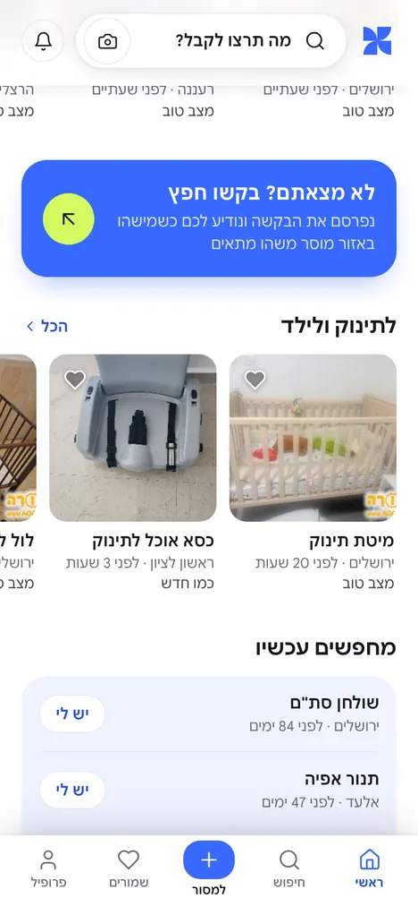
ראשי
להראות מה יש עכשיו, ולתת לחפש בלחיצה אחת.
רכיבים
שורה עליונה: לוגו, בחירת אזור ופעמון התראות
חיפוש קבוע עם מצלמה. בגלילה הלוגו נכנס מימין והפעמון משמאל, והחיפוש מצטמצם ל-52 פיקסלים
"עלו עכשיו": פריט מכל קטגוריה לסירוגין
פסים לפי קטגוריה, בלי לחזור על פריטים
כרטיס "מה יש קרוב אליך?" כשאין עדיין אזור, ופס "קרוב אליך" עם מרחק כשיש
טעינה
שלד כרטיסים בגודל הסופי, בלי קפיצת פריסה
שגיאה
"אין חיבור לרשת. החפצים יופיעו כשהחיבור יחזור", עם כפתור "לנסות שוב"
אסור
פרסומות, באנרים או כל דבר שמסתיר את החיפוש
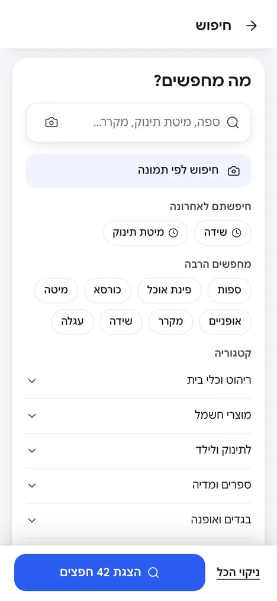
חיפוש מתקדם
לבנות חיפוש מדויק בלי טופס ארוך.
מבנה
ארבעה כרטיסים, אחד פתוח בכל פעם: מה מחפשים, איפה, באיזה מצב, סדר תוצאות. כרטיס סגור מציג סיכום בשורה אחת
מה
שדה עם מצלמה והצעות תוך כדי הקלדה
חיפושים אחרונים ופופולריים
קטגוריות נפתחות לסוגים
איפה
כל הארץ, קרוב אליי (5, 10, 25 או 50 ק"מ) או עיר מסוימת
סרגל
"ניקוי הכל" ו"הצגת N חפצים", כשהמספר מתעדכן לפני הלחיצה
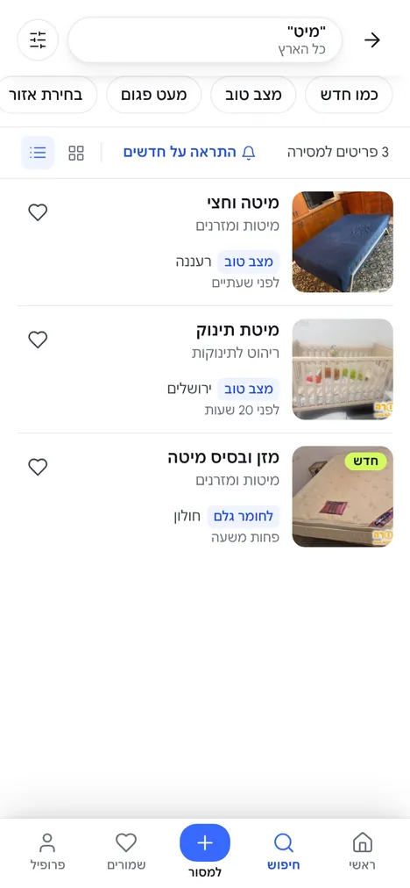
תוצאות
לצמצם עד שנשארים חפצים רלוונטיים.
רכיבים
שורת שאילתה. לחיצה פותחת את החיפוש עם הטקסט הקיים
כפתור סינון עם מונה מסננים פעילים
צ'יפים מהירים: מצב ועיר
מספר תוצאות, "התראה על חדשים", מעבר רשת או רשימה
סינון
גיליון: עיר, מצב (בחירה מרובה), מיון. הכפתור מציג את מספר התוצאות לפני שמחילים
ריק
איור, "לא מצאנו כרגע", ושתי פעולות: "התראה על חדשים" ו"ניקוי סינונים"
דף חפץ
להחליט אם לפנות, ולפנות.
רכיבים
תמונה ברוחב מלא, גלריה בהחלקה עם מונה
חזרה, שיתוף ושמירה צפים על התמונה
נתיב קטגוריה לחיץ, כותרת, עיר ומועד פרסום
שני כרטיסים: מצב (עם הסבר) ואיסוף
תיאור, מוסר מאומת, מסירה בטוחה, עוד בקטגוריה, דיווח
סרגל קבוע
"בחינם" ומקום האיסוף מימין, "אני רוצה את זה" משמאל
נמסר
הכפתור מושבת עם "החפץ כבר נמסר", ומוצעים חפצים דומים
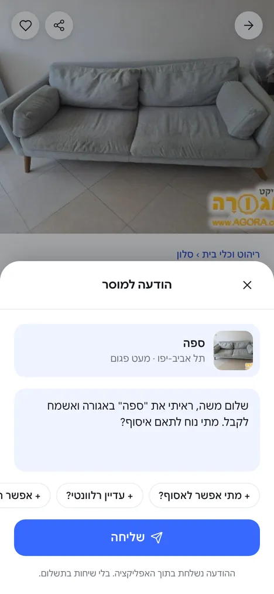
פנייה למוסר
לשלוח הודעה טובה בלחיצה אחת.
רכיבים
תקציר החפץ בראש הגיליון
טיוטת הודעה ניתנת לעריכה, עם שם המוסר והחפץ
משפטים מהירים: "מתי אפשר לאסוף?", "עדיין רלוונטי?"
"ההודעה נשלחת בתוך האפליקציה. בלי שיחות בתשלום."
אימות
פעם אחת לכל משתמש: טלפון, קוד בן 4 ספרות, "שליחה מחדש"
אחרי
"ההודעה נשלחה", עם חזרה לחפץ או לדף הראשי
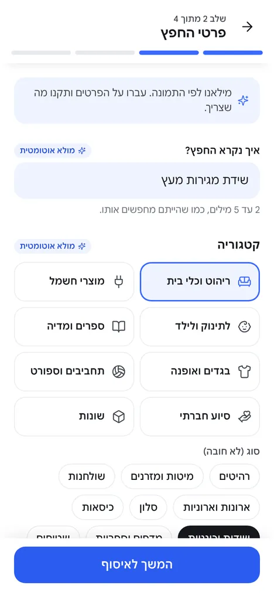
למסור
לפרסם חפץ בפחות מדקה.
שלבים
תמונות, פרטי החפץ, איסוף, בדיקה ופרסום. פס התקדמות של 4 חלקים עם שם השלב, וחזרה לשלב הקודם בלי לאבד נתונים
שדות
מה מוסרים (חובה)
קטגוריה (חובה), עם תת-קטגוריה מהזיהוי
ישוב לאיסוף (חובה), רק שם הישוב מוצג
מצב: כמו חדש, מצב טוב, מעט פגום, לחומר גלם
תיאור (רשות)
שגיאות
מתחת לשדה, במילים פשוטות, והמיקוד עובר לשדה הראשון עם שגיאה
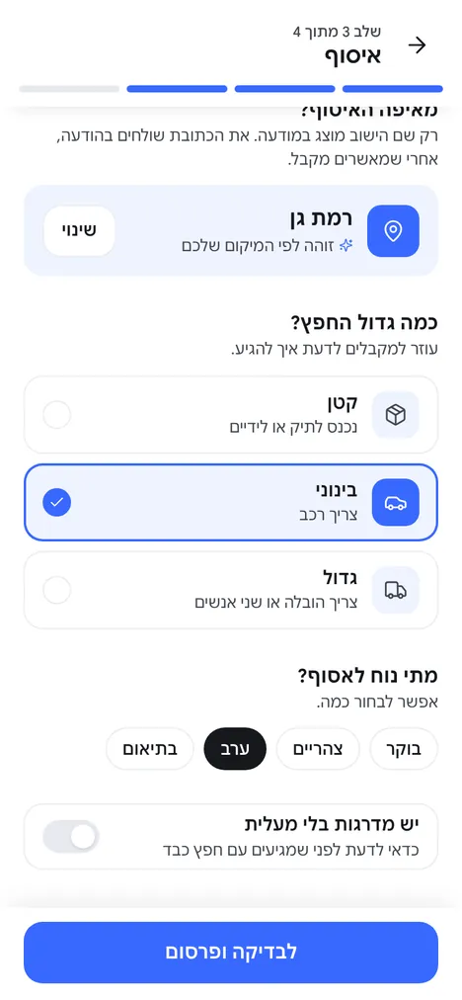
למסור: איסוף
לתת למקבל את מה שצריך כדי להגיע, בלי לחשוף כתובת.
ישוב
מזוהה אוטומטית לפי המיקום, עם "שינוי". בסירוב: "המיקום שלי" או "בחירת עיר"
גודל
קטן (נכנס לתיק), בינוני (צריך רכב), גדול (צריך הובלה)
זמנים
בוקר, צהריים, ערב, בתיאום. בחירה מרובה
מדרגות
מתג "יש מדרגות בלי מעלית"
פרטיות
רק שם הישוב מוצג. הכתובת נשלחת בהודעה אחרי אישור
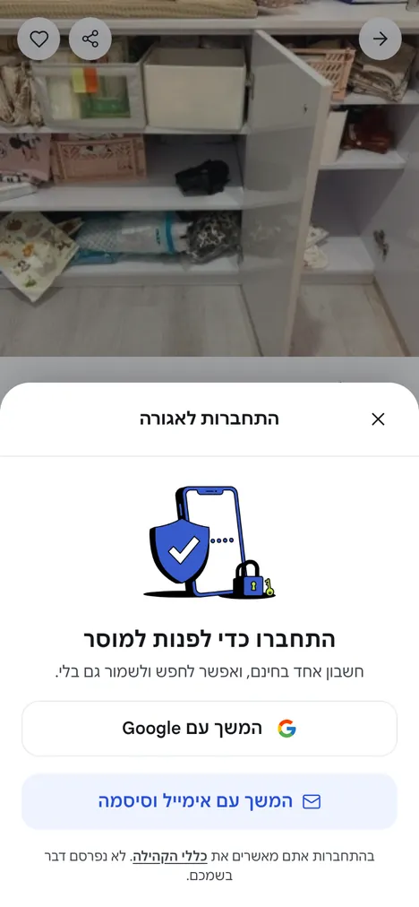
התחברות
לבקש חשבון רק ברגע שיש לו סיבה, ולחזור מיד לפעולה.
מתי
רק ב"אני רוצה את זה" וב"פרסום בלוח". הכותרת אומרת למה: "התחברו כדי לפנות למוסר"
דרכים
"המשך עם Google" (ואז שם להצגה ושם משתמש), או אימייל וסיסמה עם לשוניות "חשבון חדש" ו"כבר יש לי חשבון"
שדות
שם משתמש עם @, נבדק תוך כדי הקלדה ("פנוי" או "תפוס")
סיסמה של 8 תווים לפחות, עם הצגה והסתרה
שגיאות ליד השדה, במילים פשוטות
אחרי
"ברוכים הבאים", והפעולה שהתחילה ממשיכה מעצמה
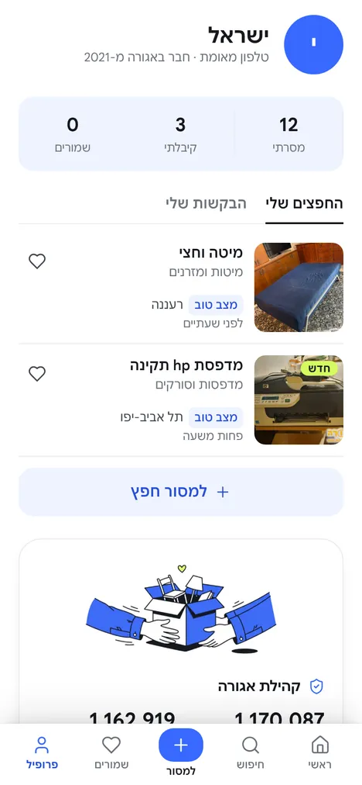
פרופיל
לנהל את מה שלי.
אורח
הזמנה להתחבר, האזור שלי, התראות וכללים
מחובר
שם, @שם משתמש וחודש הצטרפות, עם עריכה
מונים: בלוח עכשיו, נמסרו, שמורים
לשוניות "בלוח" ו"נמסרו", עם "סימון כנמסר" ו"להחזיר ללוח"
האזור שלי, קהילת אגורה, יציאה עם אישור
מערכת עיצוב
צבע
הצבע במשורה. רוב המסך לבן ושחור, כדי שהתמונות של המוסרים יובילו. כחול הוא פעולה, ליים הוא הדגשה אחת, ולבנדר הוא משטח רך.
כחול#3869FE
כחול טקסט#2850D8
ליים#D4FA60
לבנדר#EFF3FF
לבן#FFFFFF
דיו#16181D
טקסט גוף#43474F
משני#6C717B
יחס שימוש במסך: לבן ודיו 82%, לבנדר 10%, כחול 6%, ליים 2%.
צירוף
ניגודיות
כלל
לבן על כחול
4.55
עובר AA. כפתורים ראשיים בלבד, 15 פיקסלים ומעלה
כחול טקסט על לבן
6.50
לכל קישור וטקסט כחול קטן
דיו על ליים
14.92
הדרך היחידה להשתמש בליים עם טקסט
ליים על לבן
1.19
אסור כטקסט או כאייקון. רק כמילוי מתחת לדיו
משני על לבן
4.90
עובר. טקסט משני על רקע לבן
משני על לבנדר
4.42
לא עובר. על לבנדר משתמשים בטקסט גוף #43474F
קו הפרדה על לבן
1.20
קישוטי בלבד. גבולות של שדות מסומנים במילוי לבנדר
טיפוגרפיה: Google Sans
משפחה אחת בשני חיתוכים. Google Sans Text (חיתוך 17pt) לטקסט ולממשק: גובה אות גדול יותר וריווח מרווח, קריא בגדלים קטנים. Google Sans Display (החיתוך הרגיל) לכותרות של 20 פיקסלים ומעלה: צפוף ונקי יותר בגודל גדול.
צלמו את החפץDisplay 700 · 26/32 · כותרת מסך
שידת מגירות מעץDisplay 700 · 24/30 · כותרת חפץ
עלו עכשיוDisplay 700 · 19/26 · כותרת אזור
מיטה וחציText 600 · 15/22 · כותרת כרטיס
מיטה וחצי 190 על 120, איסוף מרעננה.Text 400 · 15/23 · גוף
רעננה, לפני שעתייםText 400 · 13/18 · משני
שמוריםText 600 · 11/14 · תווית לשונית
מינימום 13 פיקסלים לכל טקסט שקוראים, חוץ מתוויות הלשוניות (11). ספרות בעמודות בספרות טבלאיות. כותרות עם איזון שורות, כדי שמילה אחת לא תישאר לבד בשורה.
ריווח, פינות וצל
טוקן
ערך
שימוש
ריווח בסיס
4, 8, 12, 16, 20, 24, 32
כל המרווחים בכפולות של 4
שוליים צדדיים
20
כל המסכים. רשימות צפופות: 16
בין אזורים
32
בין פסים בבית ובין חלקים בדף חפץ
פינה קטנה
12
תמונות ממוזערות ברשימה
פינה בינונית
16
כרטיסי חפץ, כפתורים, שדות, כרטיסי מידע
פינה גדולה
24
לוחות: AI, קהילה, מיקום
גיליון
28
פינות עליונות של גיליונות
עגול
999
חיפוש, צ'יפים, אווטרים
צל חיפוש
0 6px 20px -6px
שורת החיפוש בלבד
צל כותרת
0 8px 16px -12px
מופיע רק כשתוכן גולל מתחת
צל ניווט
שלוש שכבות
הניווט התחתון: קו דק, צל קרוב ומרחף רחב
הילה כחולה
0 12px 28px -12px
"אני רוצה את זה" בלבד
הצל מסמן מה מרחף מעל התוכן. כרטיסי חפץ בגלילה לא מקבלים צל: התמונה מספיקה.
אייקונים, איורים ותמונות
נכס
כלל
אייקונים
Lucide בלבד, קו 1.75, גודל 20 או 22. אייקון פעיל בלשונית מקבל קו 2.25 וצבע כחול. בלי אימוג'י כאייקונים
איורים
סדרה אחת בצבעי המותג, חפצים בלבד. רק ברגעי ריק, אישור והצלחה, בגובה 120 עד 190. לעולם לא בבית, בתוצאות או בדף חפץ
תמונות חפצים
יחס 1:1 בכרטיס, 4:3.4 בדף חפץ. רקע אפור בהיר בזמן טעינה, גודל שמור מראש. חדש: תגית ליים "חדש" בפינה
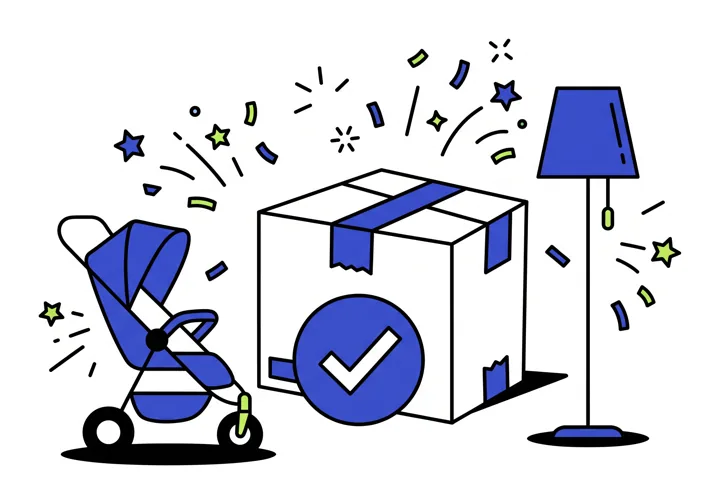
דוגמה: האיור של מסך "החפץ פורסם". האיור מסביר את הרגע, והכפתורים מתחתיו אומרים מה עושים עכשיו.
רכיבים
רכיב
וריאנטים
מפרט
מצבים
כפתור
ראשי, רך, מסגרת, שקוף
גובה 52 (גדול) או 44, פינה 16, טקסט 16/600
לחיצה: הקטנה ל-0.97. מושבת: שקיפות 40%. טעינה: טקסט עם "…"
כרטיס חפץ
רשת, פס, רשימה
תמונה 1:1, פינה 16, שמירה בפינה. כותרת שורה אחת
שמור: לב כחול מלא. נמסר: שכבה כהה ותגית
צ'יפ
רגיל, נבחר
גובה 36, עגול. נבחר: רקע דיו וטקסט לבן
aria-pressed לפי מצב
שדה
טקסט, בחירה, טקסט ארוך
מילוי לבנדר, פינה 16. בפוקוס: לבן עם טבעת כחולה
שגיאה מתחת לשדה. עזרה כשאין שגיאה
גיליון
עם או בלי שורת פעולה
פינות 28, עד 88% מגובה המסך, כותרת וסגירה
סגירה בגרירה, X, רקע או חזרה
סרגל עליון
כותרת, שדה, פעולה
חזרה מימין, נדבק לראש עם צל כשגוללים
תמיד מוצג במסכים פנימיים
ניווט תחתון
5 פריטים
"למסור" במרכז, כחול. תווית 11/600
פעיל: אייקון כחול עבה וטקסט מודגש
הודעה קופצת
מידע
רקע דיו, טקסט לבן, מעל הניווט
2.4 שניות, מוכרזת לקורא מסך
מצב ריק
עם איור
איור, כותרת, משפט, פעולה אחת או שתיים
תמיד עם פעולה, אף פעם לא מסך ריק
תנועה
תנועה רק כשהיא מסבירה מה השתנה. מה שקורה עשרות פעמים ביום זז מעט או לא זז. רק transform ו-opacity מונפשים.
רגע
תנועה
משך ועקומה
לחיצה על כפתור או כרטיס
הקטנה ל-0.97
120ms, יציאה מהירה
מעבר בין מסכים
שקיפות בלבד
150ms
פתיחת גיליון
עולה מלמטה ב-100% מגובהו
280ms, עקומת מגירה
סגירת גיליון
יורד, מהיר יותר מהפתיחה
200ms
שמירה בלב
מילוי והגדלה קלה ל-1.15 וחזרה
220ms, קפיץ עדין
הודעה קופצת
עולה 10 פיקסלים ומופיעה
180ms
כותרת הבית מצטמצמת
לוגו ופעמון נכנסים מהצדדים
200ms
זיהוי AI
קו סריקה עובר על התמונה
1.6s בלולאה, עד לתוצאה
טוקן
ערך
יציאה מהירה
cubic-bezier(0.23, 1, 0.32, 1)
מגירה
cubic-bezier(0.32, 0.72, 0, 1)
תנועה הדדית
cubic-bezier(0.77, 0, 0.175, 1)
כשמוגדר "הפחתת תנועה" במכשיר: בלי תזוזה, רק שקיפות. קו הסריקה נעצר במקום, והטקסט "מזהים…" נשאר.
כתיבה וטון
הטון של שכן טוב: פשוט, חם וענייני. פונים ברבים ("צלמו", "מחפשים"), כותבים בפעלים, ולא מתנצלים. כל כפתור אומר מה יקרה, ואותה פעולה נקראת באותו שם לאורך כל הדרך.
כךפרסום בלוח
לא כךהמשך
כךמאיזה ישוב האיסוף?
לא כךשדה חובה
כךלא מצאנו כרגע. אפשר להפעיל התראה ונודיע לכם.
לא כךאופס! אין תוצאות 😕
כךההודעה נשלחת בתוך האפליקציה. בלי שיחות בתשלום.
לא כךצור קשר עם המפרסם
כךשולחים…
לא כךאנא המתן
מספרים בספרות, גרשיים עבריים במקומם (ק"מ, סת"ם), ושלוש נקודות כתו אחד (…). שמות מותגים לא מתורגמים.
נגישות ו-RTL
היעד הוא עמידה ב-WCAG 2.1 AA, שעליו מבוסס התקן הישראלי 5568.
אזור מגע של 44 על 44 לפחות לכל פעולה, גם כשהאייקון קטן יותר
לכל כפתור אייקון יש שם נגיש, ולאיורים יש alt ריק
פוקוס מקלדת נראה לעין, וסדר הפוקוס זהה לסדר הוויזואלי מימין לשמאל
כרטיסי חפץ הם קישורים אמיתיים, לא רכיבים עם לחיצה בלבד
הודעות קופצות ושגיאות מוכרזות לקורא מסך
טקסט גדל עם הגדרות הגופן של המכשיר עד 200% בלי להיחתך
לא נשענים על צבע לבד: מצב חפץ מגיע עם טקסט, ונבחר עם צורה
אייקונים כיווניים מתהפכים: חץ חזרה מצביע ימינה, "הכל" מצביע שמאלה
אייקונים שאינם כיווניים לא מתהפכים: מצלמה, לב, פעמון
פסים נגללים מתחילים מימין, וגלילה טבעית היא לשמאל
מספרי טלפון וקודים בכיוון שמאל לימין בתוך טקסט עברי
זיהוי AI
ה-AI חוסך הקלדה, אבל לא מחליט במקום המשתמש. בכל מקום שבו הוא ממלא משהו, המשתמש רואה את זה ויכול לשנות.
במסירה: גלוי
מתג "זיהוי אוטומטי" או "מילוי ידני" בראש שלב התמונות
החזרה: שם, קטגוריה ותת-קטגוריה מהרשימה הסגורה, מצב, תיאור וביטחון
ביטחון מתחת ל-0.5, או "אין חפץ": מעבר לבדיקה ידנית
תגית "מולא ב-AI" ליד כל שדה, שנעלמת אחרי עריכה
עיר לא מזוהה מתמונה, ולכן תמיד נשאלת
בחיפוש: שקוף
מוצג כ"חיפוש לפי תמונה" בלבד, בלי המילה AI ובלי להציג את התמונה
החזרה: שם, קטגוריה, תת-קטגוריה ומילות חיפוש
דירוג: מילה בכותרת, אחר כך תת-קטגוריה, אחר כך קטגוריה
קטגוריה כללית מוצגת רק כשיש פחות משני חפצים דומים
מקרה
מה המשתמש רואה
המשתמש לא אישר שימוש ב-AI
מעבר שקט למילוי ידני, עם משפט הסבר אחד
יותר מדי בקשות
"יותר מדי ניסיונות ברגע זה. נסו שוב בעוד דקה, או מלאו ידנית."
כשל
"לא הצלחנו לזהות את החפץ", עם "לנסות שוב" ו"מילוי ידני"
ביטול
חוזרים למצב שלפני, בלי הודעה
איפה שאין גישה ל-AI, האפשרות לא מוצגת ועוברים למילוי ידני. לא מוצגת אף פעם "תוצאה לדוגמה". כל תמונה מומרת ל-JPEG של עד 1600 פיקסלים לפני השליחה, כך שגם תמונות HEIC מהאייפון עובדות.
פרטיות: נשלחות עד 3 תמונות, מוקטנות ובלי מידע מיקום. דרישה מספק ה-AI: לא לשמור את התמונות מעבר לבקשה עצמה. בייצור, הקריאה עוברת דרך השרת של אגורה ולא ישירות מהמכשיר.
פערים ותעדוף
מה שהאב-טיפוס הנוכחי עוד לא עושה לפי האיפיון הזה. עדיפות 1 חוסמת השקה.
עדיפות 1
מסך הודעות. אין מקום לראות תשובה של מוסר ולהמשיך שיחה. בלי זה הזרימה נקטעת אחרי "ההודעה נשלחה".
עדיפות 1
דירוג הדדי. "סימון כנמסר" קיים. חסר דירוג קצר של שני הצדדים אחרי המסירה.
עדיפות 1
שרת וחשבונות אמיתיים. באב-טיפוס החשבונות נשמרים בדפדפן, וכפתור Google לא פונה לגוגל. בייצור: OAuth של Google ואימייל וסיסמה דרך שרת, למשל Supabase Auth.
עדיפות 2
כרטיסים כקישורים אמיתיים. כרטיסי חפץ בנויים היום כרכיב עם לחיצה. צריך קישור, כדי לתמוך בקורא מסך ובפתיחה בלשונית חדשה.
עדיפות 2
טקסט משני על לבנדר. ניגודיות 4.42. להחליף לצבע טקסט הגוף בכל משטח לבנדר.
עדיפות 2
תנועה. מעבר בין מסכים מזיז את התוכן ב-6 פיקסלים בכל ניווט. להשאיר שקיפות בלבד. בכפתורים להנפיש רק את ההקטנה, לא את כל המאפיינים.
עדיפות 2
שדות טופס. להוסיף השלמה אוטומטית (טלפון, קוד SMS), ושכל דוגמה בשדה תסתיים ב-"…".
עדיפות 3
גלריית תמונות. היום כל מודעה מציגה תמונה אחת. לתמוך בעד 6 תמונות עם החלקה ומונה.
עדיפות 3
מצב כהה. הטוקנים מוכנים, אבל צריך לבדוק ניגודיות בנפרד לכל צירוף.
שאלות פתוחות
מי קהל היעד הראשון להשקה: כל הארץ, או ערים וקהילות מסוימות?
האם להוסיף התחברות עם Apple? חנות האפליקציות של אפל דורשת אותה כשיש התחברות עם Google.
האם מסך הודעות הוא צ'אט מלא, או הודעה אחת ואחריה חשיפת טלפון באישור המוסר?
מי מאשר דיווחים על מודעות, ותוך כמה זמן?
האם "קהילות אגורה" מהאתר נכנסות לאפליקציה בגרסה הראשונה?
איזה ספק AI משמש בייצור, ומה העלות לכל זיהוי?
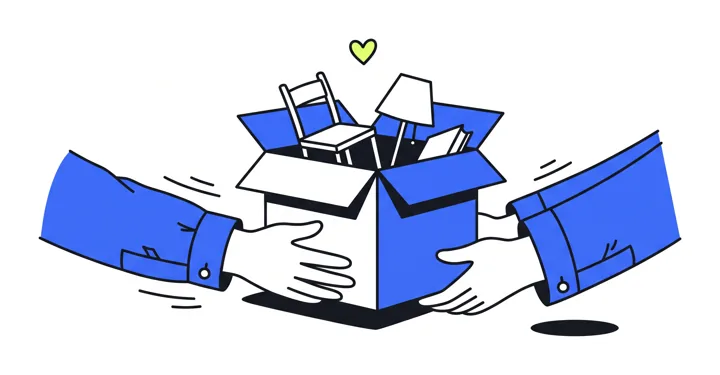
הצעד הבא: אישור האיפיון, ואחריו בניית שלושת הפערים בעדיפות 1 באב-טיפוס.